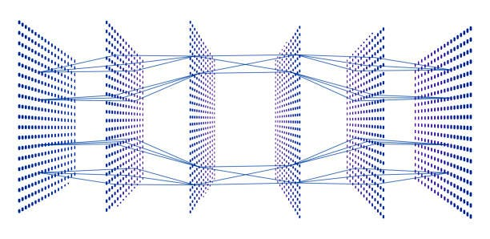

I am a senior computer science student at Brown University. My work mainly covers the areas of computer graphics and 3D computer vision. With projects and experience in AI/ML and GPU programming, I’m always looking for ways to push boundaries and create immersive, high-performance tech.
I'm currently a research assistant at Brown University, working on 3D Gaussian Splatting to optimize training and rendering techniques. Over the past summer, I was a Vision Pro Real-Time Software Engineering Intern at Apple, where I focused on GPU optimization for rendering 3D spatial Personas. My work involved improving performance and efficiency, cutting GPU megacycles, and enhancing real-time rendering for Apple's next-generation spatial computing experiences. More details can be found on my resume.
In my free time, I am a vocalist and guitarist in a band that often performs at local venues. I also enjoy cooking, and I was a member of the Brown University Table Tennis team.